Custom Ti-Bike Part I — Conception
Prologue
I've been riding a fixed-gear bicycle in San Francisco for the past 4 years. It's great for commuting and getting from point A to point B efficiently—avoiding terrible traffic, as well as unsanitary and unreliable public transportation. Throughout this time I've become more and more of a gear-junkie, delving deeper and deeper into bling-y but totally unecessary fixed-gear bicycle components, and deeply learning how to fix/assemble a bicycle along the way.
Awhile back I stumbled across Spanner Bike, a blog that chronicles the titanium bicycle builds of westerners who work with Chinese manufacturers to affordably fabricate custom frames. I'd briefly toyed with the idea of building up a fully-custom titanium fixed-gear commuter, but couldn't begin to justify it.
But earlier this year, I started borrowing friends' bikes for long rides past the Golden Gate Bridge into the Marin Highlands, and got thoroughly hooked. I briefly shopped around for carbon race bike from local bike shops, but I just wasn't feeling the carbon calling.
Most carbon frames had really flashy and gaudy color schemes like this:
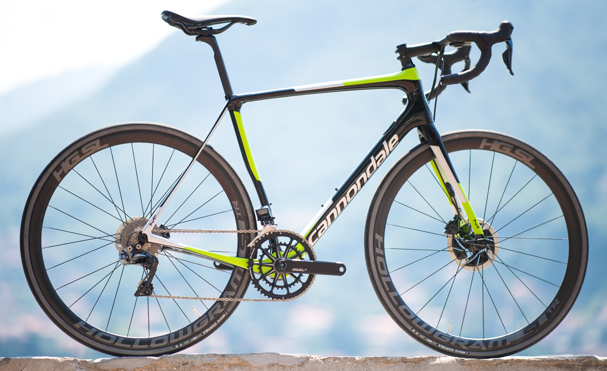
And others were subdued and relatively bland.
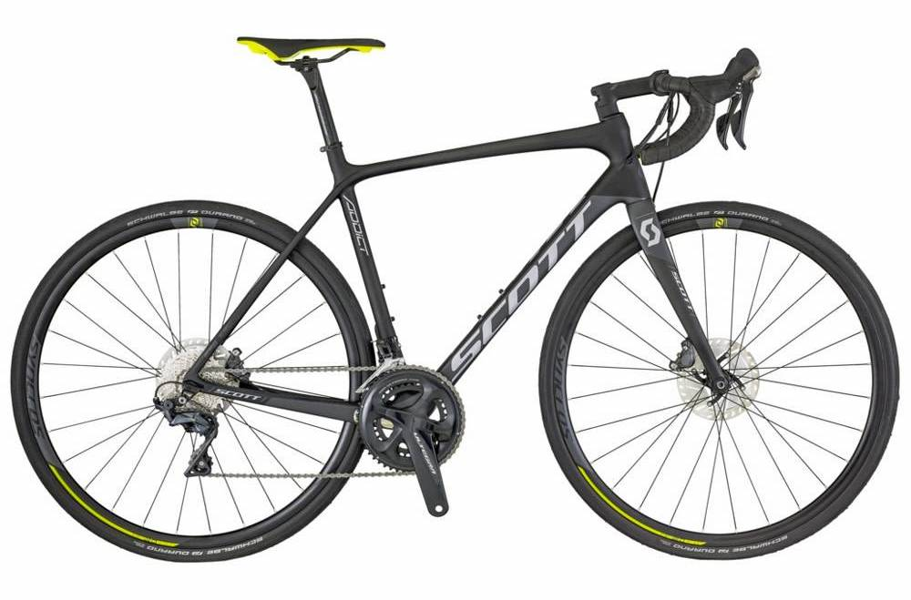
I also didn't like the need to baby these fragile carbon frames. So when I recalled the Chinese Titanium idea, I latched on and began planning. My goal was something subtle, technical, stealthy and sleek—something like this:
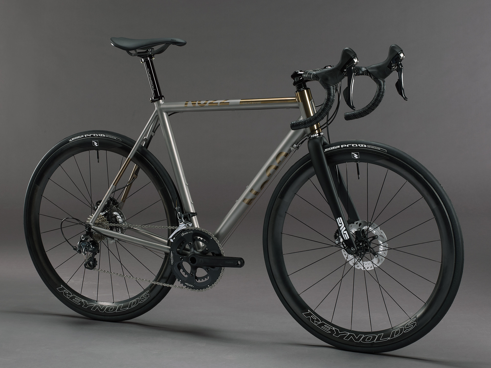
Desired Features
I spent quite some time researching other builds on Spanner to find out what to look for and what could be done. I also went through several hundred drool-worthy photos on the FireFly titanium bicycles tumblr page for design ideas.
I settled on the following general list of features:
- titanium road frame, 3Al2.5V titanium alloy, the main advantages of Titanium are:
- highest strength/weight ratio of all known metals, resulting in very lightweight frames
- non-corrosive/oxidative allowing for raw finishes
- can be custom cut per rider, as opposed to carbon which only comes in stock sizes
- extremely durable (although not quite as durable as steel), won't fatigue like Aluminum, and won't crack/shatter like carbon
- softer ride quality, doesn't feel as harsh as aluminum or carbon frames
- flat-mount hydraulic disc brakes
- I went back and forth quite a while about whether to go with disc or rim brakes. I settled on disc because the brake feeling was just so superior when I tried them out at the local bike shop. It makes your bicycle brakes feel like your car brakes in the best way possible.
- The shuriken-like silver rotors also look pretty sick.
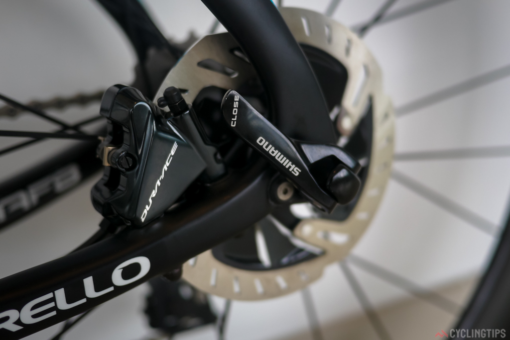
- there are quite a few disc mounting standards, my choice was easy because the Shimano groupset only comes with flat-mount brakes, which look really stealthy too!
- rear thru-axle mounting with replacable derailleur hangar
- most disc brake frames come standard with thru-axles which are almost required to support the immense forces generated by the localized disc brake. This means the axle actually threads through a hole in the frame rather than simply being slotted in and held by pressure.
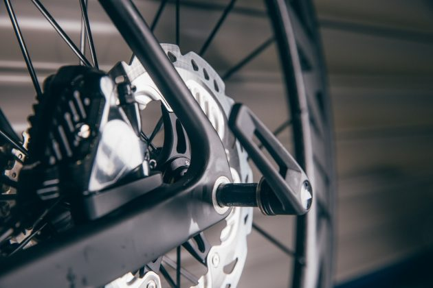
- double-butted tubing to save weight
- semi-internal rear hydraulic brake hose routing with criss-cross barrel adjusters under the downtube. Cable
routing is almost an art form itself.
- The derailleur cables would utilize frame-attached barrel adjusters, which gives on-the-fly adjustability. The shifter action is a bit crisper because the wires have a very stiff support (the 40mm thick downtube!) and there is less cable friction since the wires are exposed to the air.
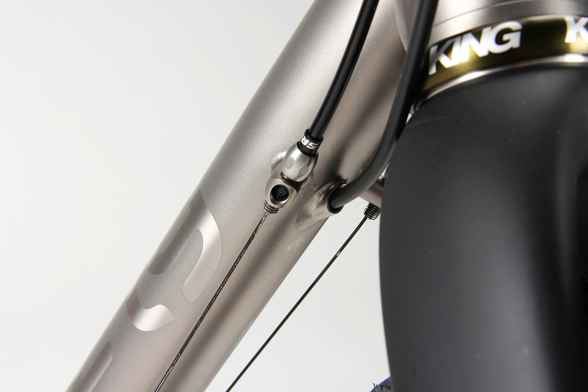
- The wires would criss-cross underneath the downtube which allows for a more gradual curve of the cables from the handlebars to the barrel adjusters—see non-criss-cross, notice how the non-criss-cross cables awkwardly double back on themselves from the handlebar into the downtube. Because of the criss-cross, the thick hydraulic rear brake hose would get in the way of the cross if routed on the outside of the downtube, so it needs to route internally through the downtube and come out again just before the bottom bracket.
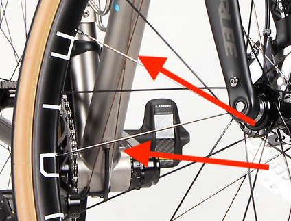
- 68mm English BSA bottom bracket
- There are like a trillion bottom bracket standards. It took me quite a while to sift through the noise and figure out the most sensible choice. Mostly the different standards are just variations of press-fit or thread-in bottom brackets with different diameters and widths. I ended up going with the old and trusted 68mm English Threaded system, which has been around for decades and which my Shimano Ultegra Groupset happens to come standard with. Threaded bottom brackets can be installed without the use of special press-fit tools, and tend to be more forgiving of tolerances so they are less likely to creak. Carbon frames tend to use press-fit because you can't really have strong threads in carbon, but I'm not tied to that limitation :)
- I considered a T47 standard—basically a wider diameter threaded system. Because of the wider diameter, there's more surface area for cleaner welds, especially important for larger diameter tubing frames like Titanium (steel tubes can be made super thin due to strength). T47 would also allow me to use lighter weight and stiffer 30mm hollow axle cranksets. But my Shimano groupset already came with a solid axle crankset and 68mm English BSA bottom bracket, so I would have needed to buy a new crankset, bottom bracket, and pay extra for the T47, which didn't seem worth it.
- 44mm straight headtube
- There are just as many different headset standards as bottom brackets. Luckily, this is basically decided by what fork I decide to use. Most disc brake forks have a thicker diameter steerer tube that fits naturally into a 44mm straight or 44mm tapered headtube.
- Tapered looked funny to me
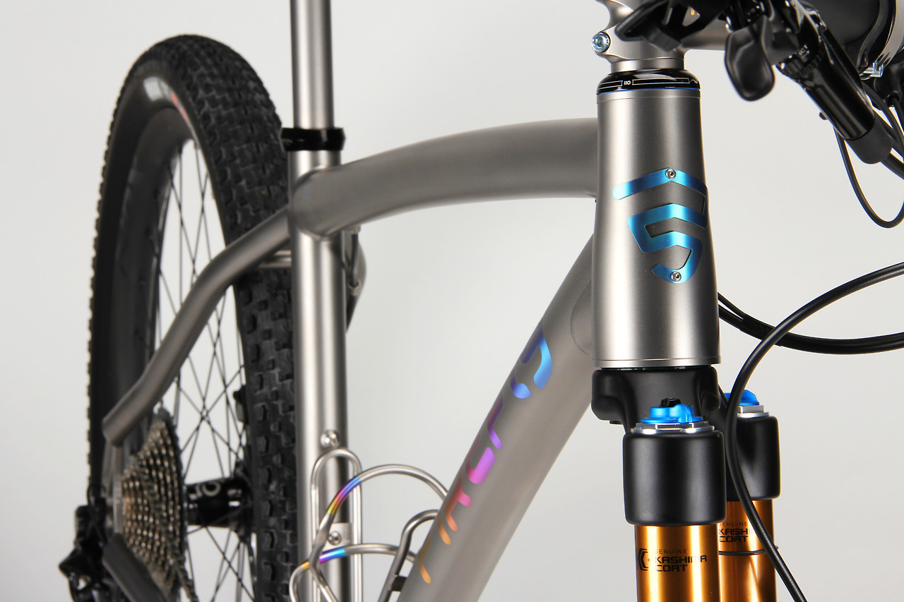
- So I decided to go with straight
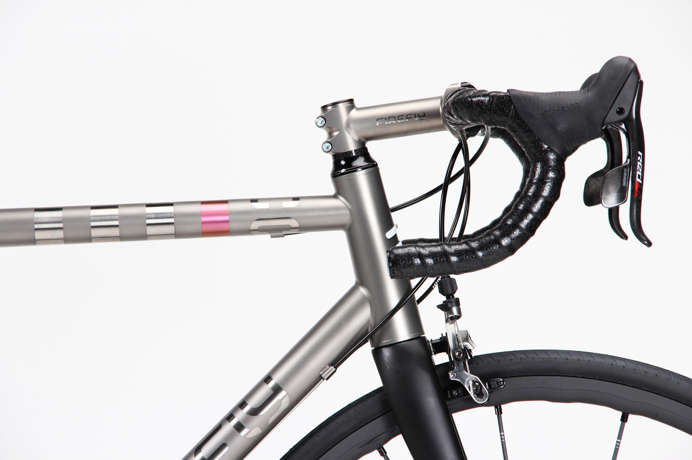
- Midway through I decided to change this to an hourglass shape but it was still 44mm top and bottom outer diameters
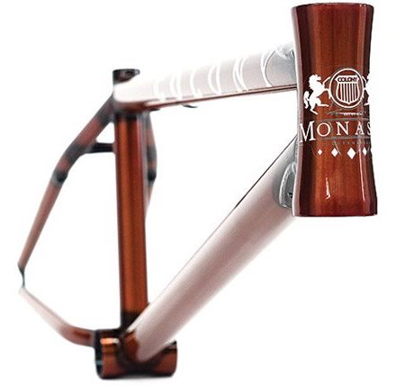
- rear rack/fender mounts, in case I ever do some touring or poor weather riding
- clearance for 28mm tyres
- my fixie uses thin 23mm tyres, but there's been a trend in recent years that wider tyres are more comfortable and actually faster due to lower rolling resistance, so I opted for a conservative increase to 28mm.
- medium aggressive compact geometry
- a bit lower bottom bracket drop, ~75mm?
- longer chainstay length, 425mm?
- down-sloping toptube for weight savings
- brushed finish with contrasting bead-blasted logos
- There are quite a few options for titanium frame finishes. One could of course paint it, but that doesn't take advantage of one of titanium's greatest draws—it does not oxidize nor corrode in air. So it can be finished raw. I wanted a brushed finish because I love the look of brushed stainless steel, and this happens to also be the most maintainable finish, since restoring it is as simple as wiping with a scotch-brite pad.
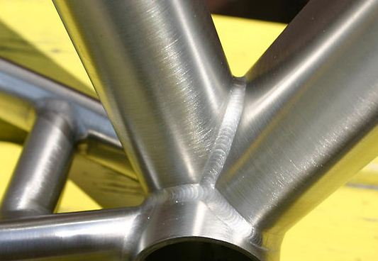
- Rather than painting a logo onto the frame, I wanted the logo to be bead-blasted in a raw matte finish, again showcasing the raw titanium.
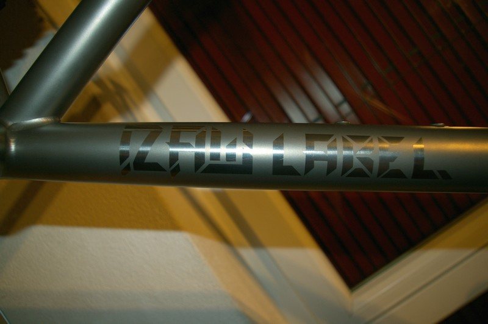
{kind=link}
The upcoming followup: Part II — Design, details selecting a manufacturer and going through the design process.